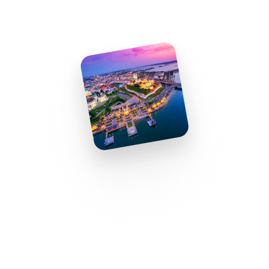
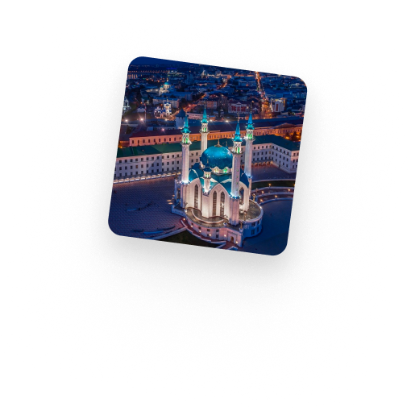
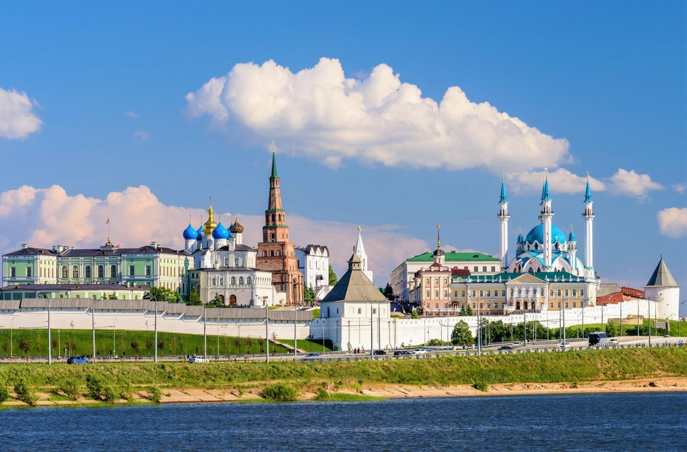
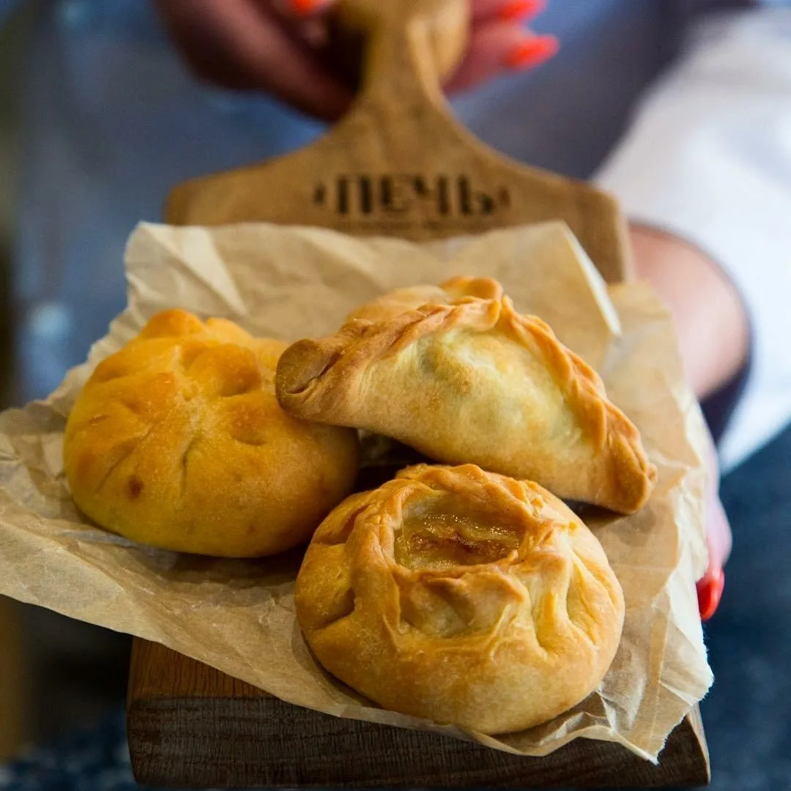
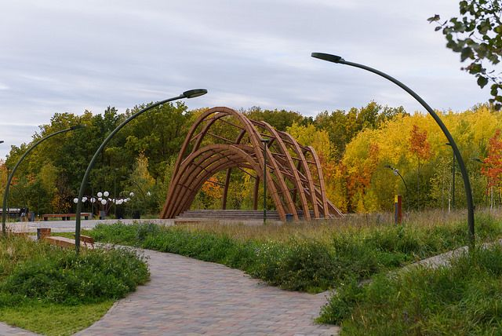
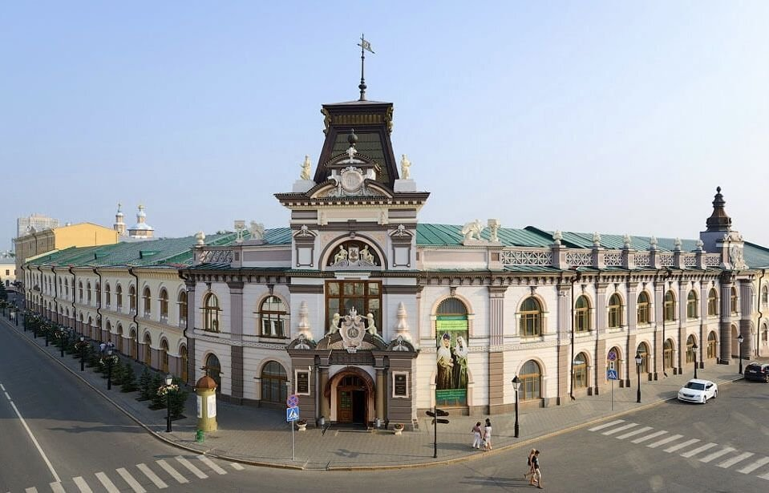
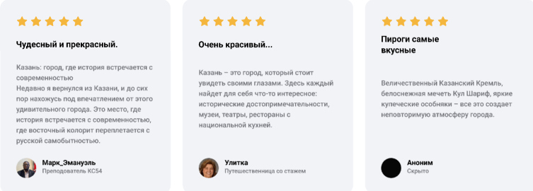

Вы можете поделиться вашими фотографиями с Казани!

Казань - город, который покоряет

Казанский кремль
Казанский Кремль – древнейшая часть Казани, представляющая собой комплекс архитектурных, исторических и археологических памятников. Фонды Казанского Кремля Фонды Музея-заповедника «Казанский Кремль» включают предметы археологии, этнографии, а также документальные источники.Местная кухня
Только познакомившись с традиционной татарской кухней ближе, можно уверенно сказать, что поесть в Казани. Но большинство путешественников едут в Татарстан впервые, а потому бывают в некотором замешательстве. Конечно, в Казани можно спокойно найти и борщ, и пельмени, да даже бургер-фастфуд продается на каждом углу, но когда у региона такая богатая своя национальная кухня, грех не отведать ее вкуснейших блюд. В этой статье мы собрали самые популярные и любимые нами татарские вкусности.


Наши парки
Казань, помимо богатой истории и архитектурных шедевров, славится своими живописными парками, где можно сбежать от городской суеты и насладиться единением с природой. Каждый парк обладает неповторимой атмосферой и предлагает своим посетителям уникальные возможности для отдыха.Наши музеи
Казань, столица Республики Татарстан, является не только крупным мегаполисом, но и культурным центром с богатой историей. Многочисленные музеи города открывают двери для всех, кто жаждет знаний, новых впечатлений и хочет прикоснуться к тайнам прошлого.

Актуальные программы
Наши предстоящие мероприятияОтзывы о Казани

© 2024 KazanGroup.ru